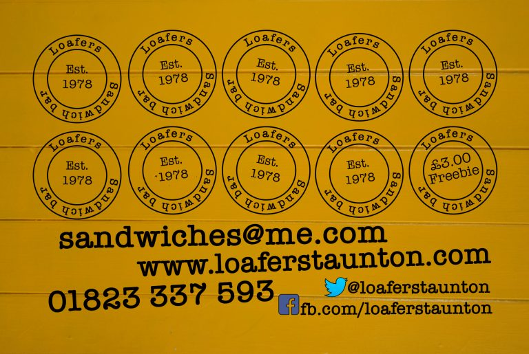

Situated in Somerset's county town of Taunton, Loafers has been open since 1978 and is still offering a great selection of hot and cold food from our shop located on the historic Bath Place.
Come and visit us for a great selection of breakfast rolls, daily roasts, burgers, paninis, wraps, plus various cold fillings served from our salad bar.
Our Loyalty Scheme
We give your card a stamp when you come in and get some food and when it's full bring it back in on your next visit and you can have a little treat on us.
Allegen Information
Please be aware that some of our products may contain one or more of the 14 main allergens that can be harmful if eaten, if you are ordering over the telephone or are visiting the shop, please make the member of staff you talk to aware of any specific allergens or other dietary requirement.